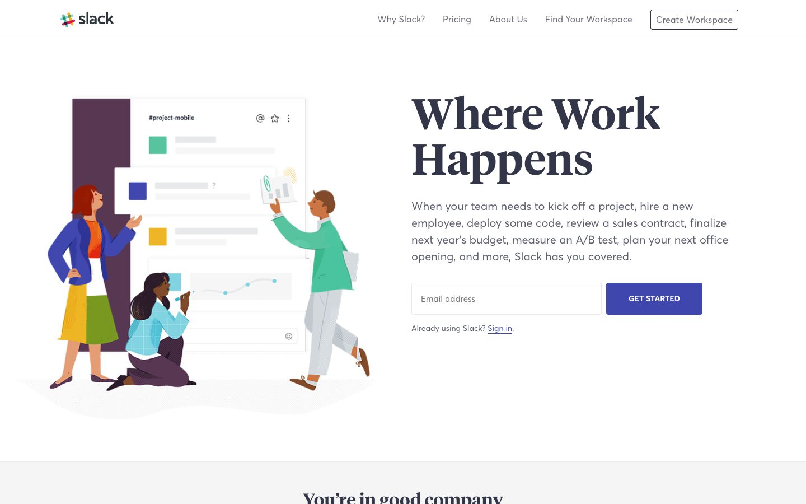

References / Website / 334
Slack website, 2018
Slack’s 2018 home page: four flat, long-limbed people work around an oversized chat window beside the serif headline “Where Work Happens”.
- Source
- Slack (archived copy)
- Creator
- Slack
- Made
- 2018 (Wayback capture of 31 May 2018)
- Style
- Corporate Memphis (agent-proposed, not yet reviewed by a person)
- Moods
- Friendly, busy, warm
- Evidence
- Captured with
tools/capture.mjs(headless Chrome, 1440 × 900) on 28 September 2026 and inspected. No cookie box covers the page. The screenshot shows the first viewport; the measurement covers up to four screens. - Reviewed
- Rights
- Third-party work, stored with credit for commentary. License: unverified. Rights policy
The live Slack site has changed since this 2018 capture.
Context
Alice Lee made the illustration voice and library for Slack from January 2017, citing Mary Blair and Charley Harper, with “organic, imperfect shapework; bold colors and warm tone”. Alice Lee.
Wired (2021) lists Slack among the brands that use the style. Wired.
Observed
- On the left, a large chat window titled “#project-mobile” shows colored squares and grey placeholder lines, with a dark plum bar at its left edge.
- Four people stand, kneel, and walk around it: a red-haired woman in a blue jacket and a yellow and green skirt, a kneeling woman writing on the window, and a man in a green sweater holding up a chart.
- Skin tones are natural browns and peach. Limbs are long and figures are about eight heads tall; faces have small features.
- The kneeling woman’s top and the man’s trousers carry a fine grid or hatch texture.
- On the right, “Where Work Happens” is set in a heavy serif, with an email field and a square indigo button.
Why it belongs
It shows the style’s layout and gesture (people acting on a giant interface) without its non-natural skin. The heavy serif headline and square button also depart from the style’s rounded sans-serif interface.
Borrow
Put the figures around an oversized version of the product’s own window so the illustration explains the product.
Measured
Machine-extracted by tools/extract-traits.js on . Full measurement.
- Type families
- Slack-Averta (94%), Slack-Tiempos (6%)
- Type scale ratio
- 1.29
- Median radius
- 0 px
- Mean chroma
- 0.02
- Palette
- #ffffff 81%
- #6d6f7b 9%
- #5b5e6d 8%
- #323648 2%
- #3f46ad 1%
- #1c299d 0%

